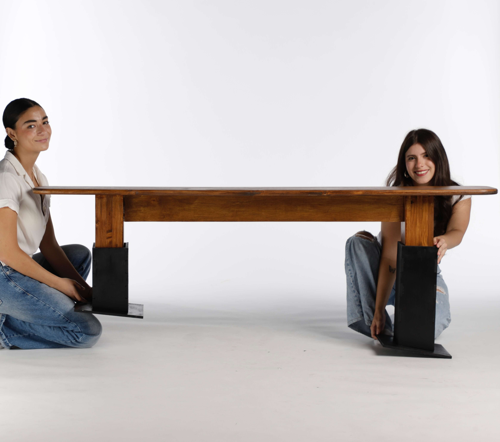
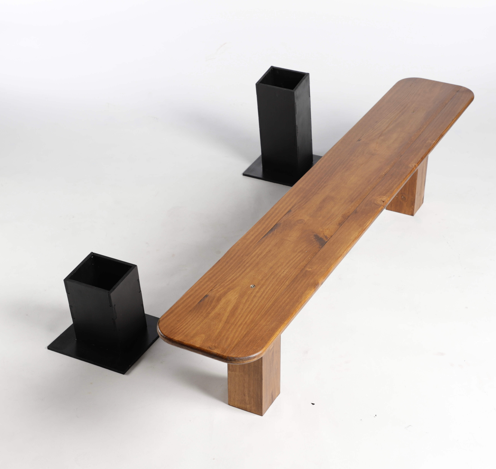
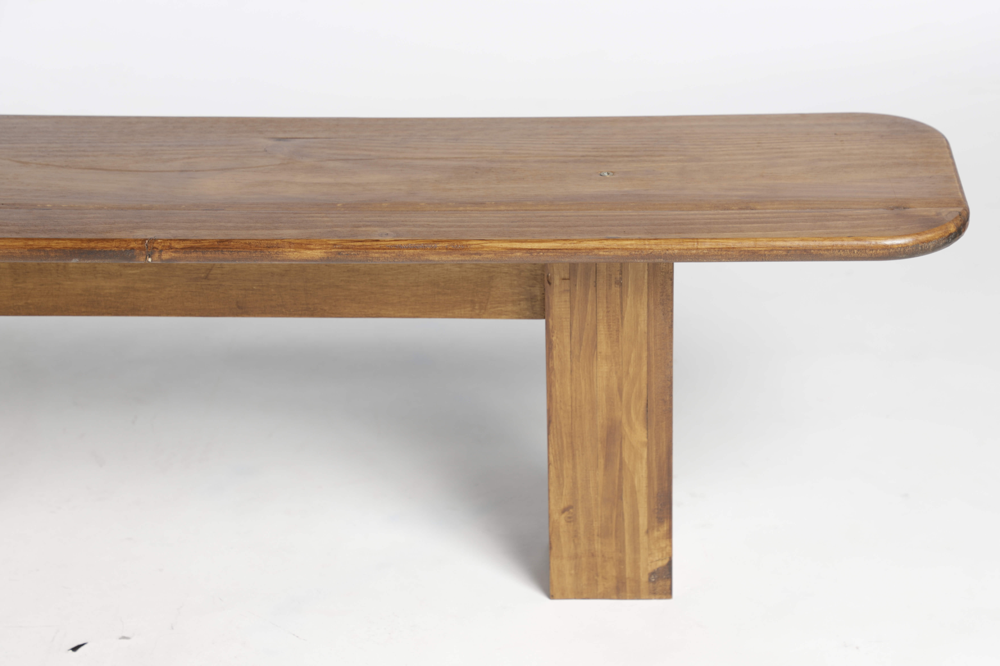
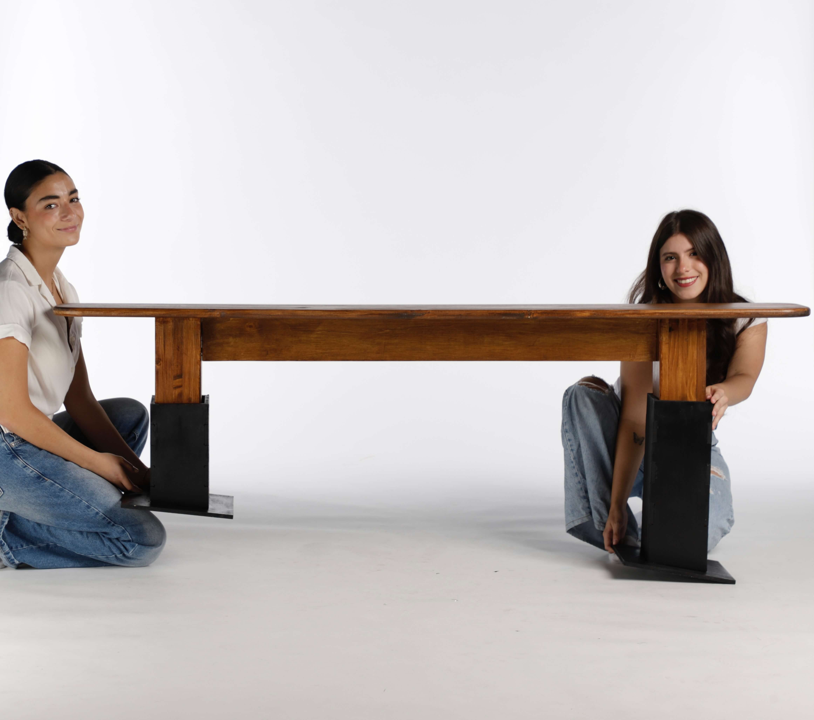
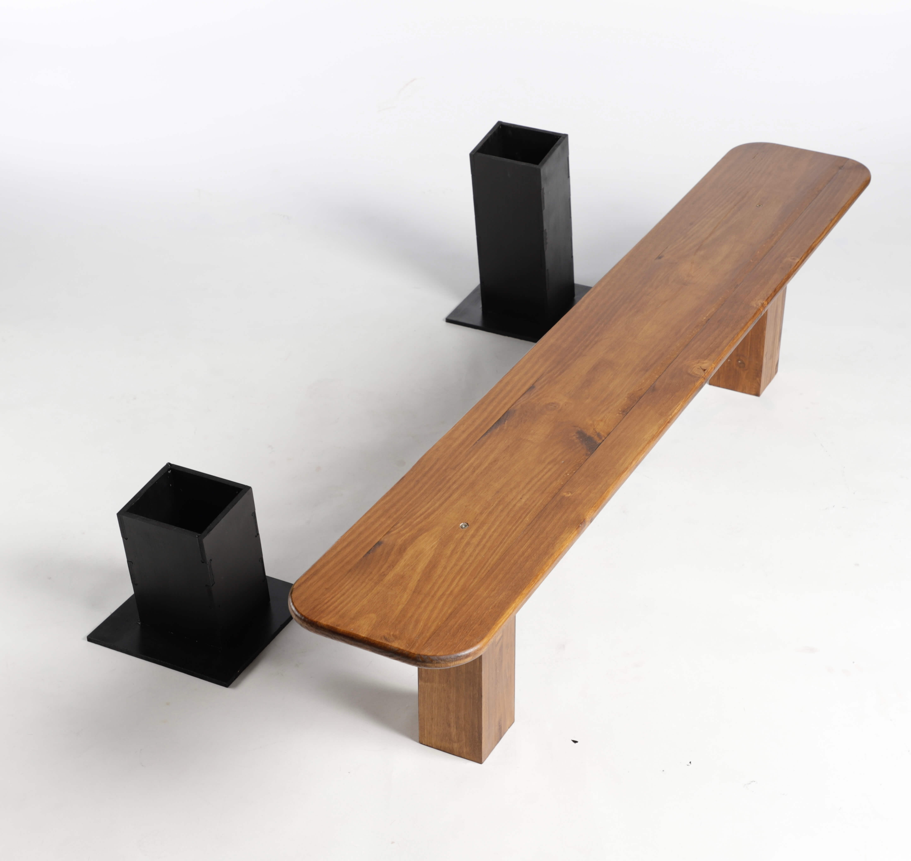
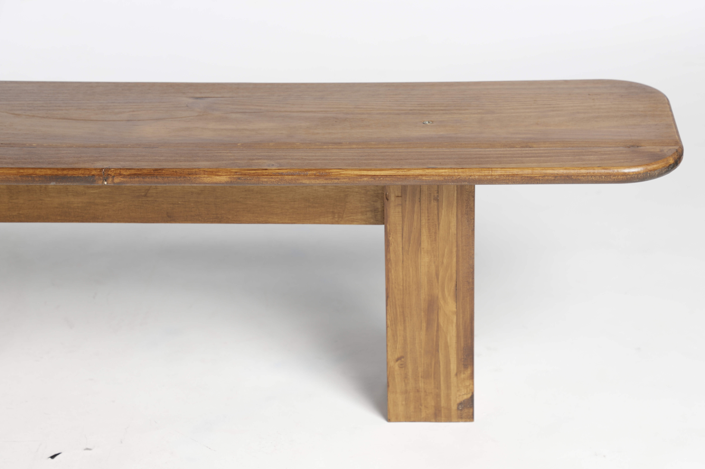
 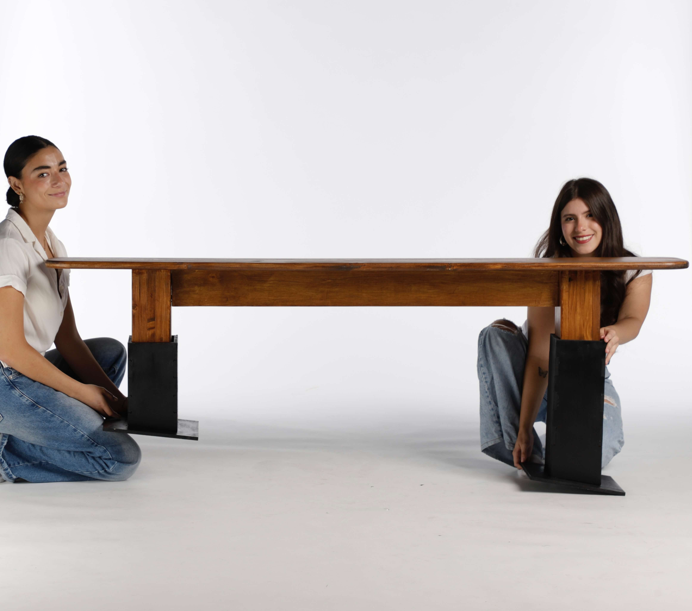
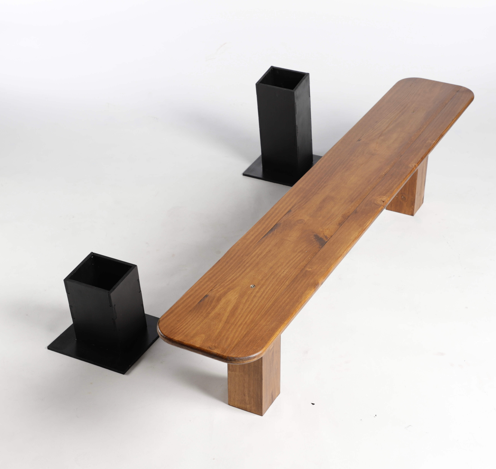
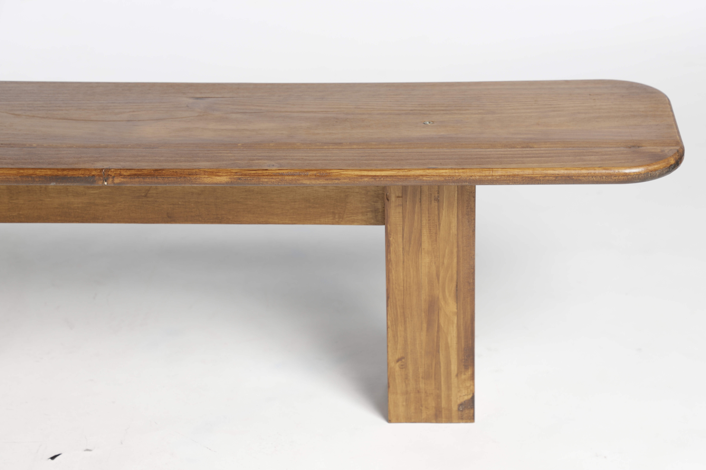
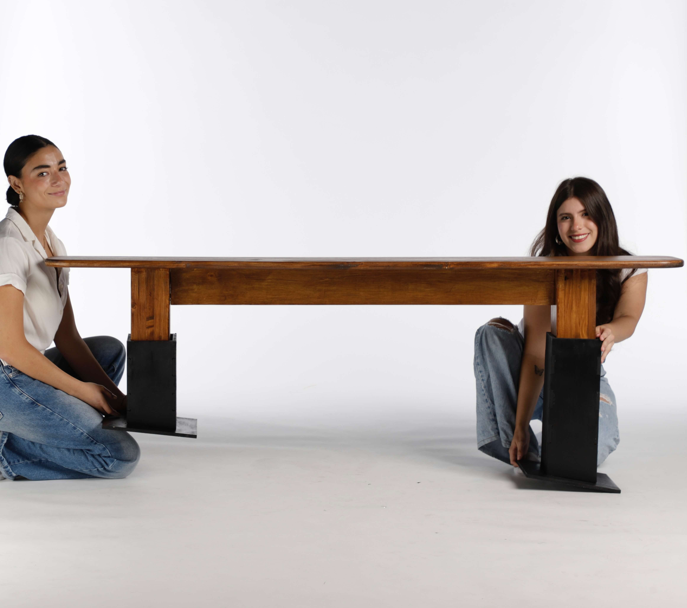
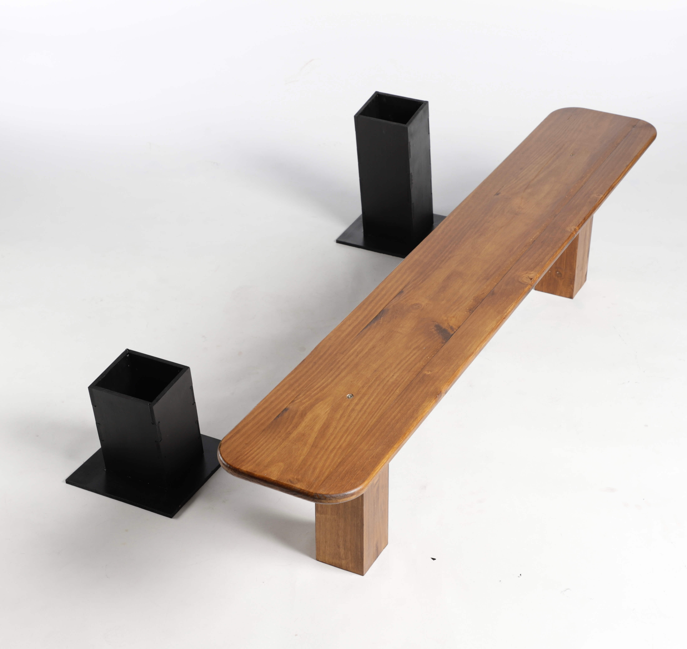
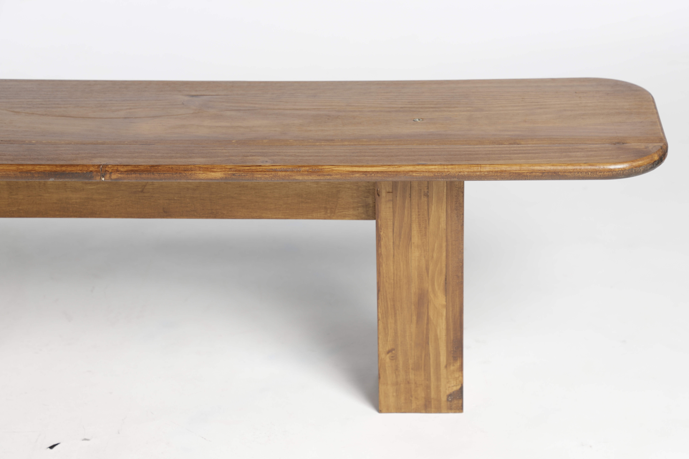
Bench design for the Malasaña-based café Maison Brûlée. Made in pine wood, this piece adapts to both flat and sloped surfaces using detachable CNC-cut base supports. Designed to transition smoothly between interior and exterior conditions. (in this case, a street slope) Designed in collaboration with Isabela Stevens, using Rhino modeling, CNC manufacturing, and workshop craftsmanship.